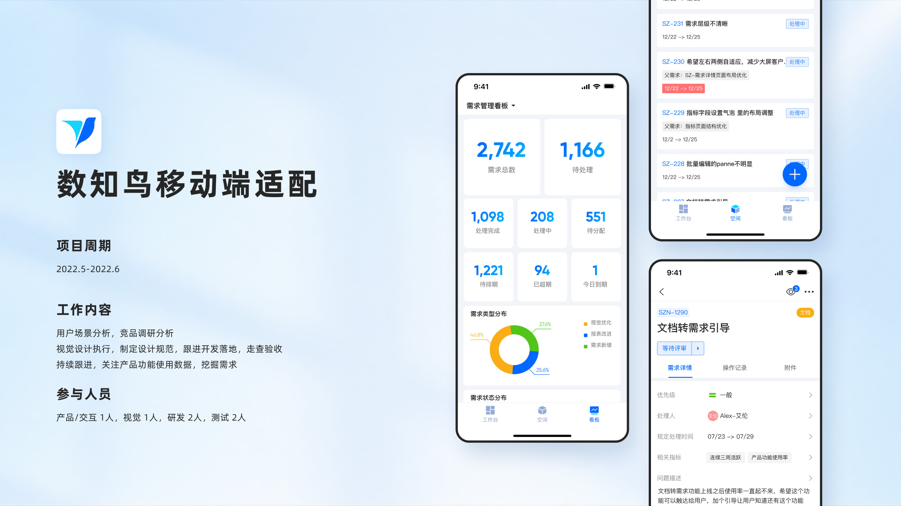
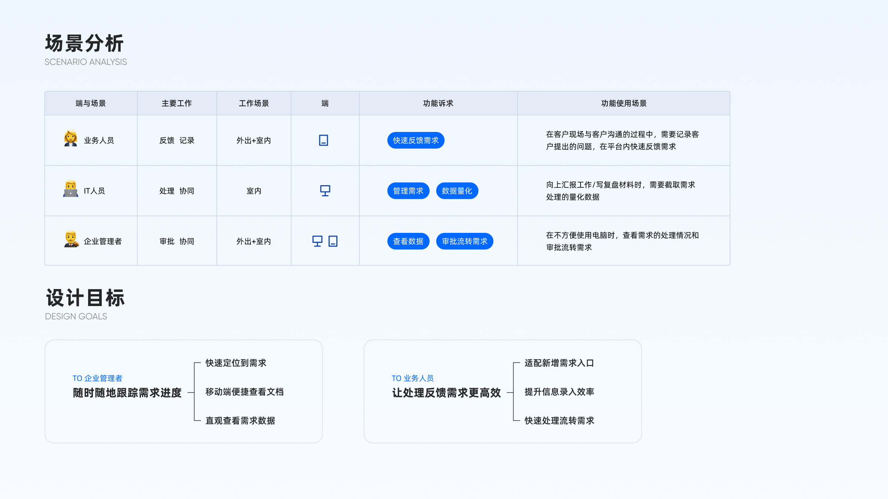
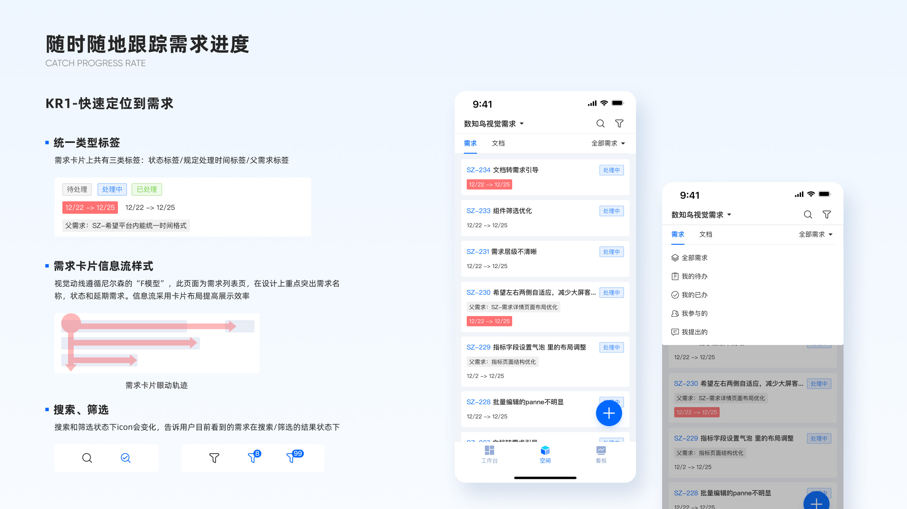
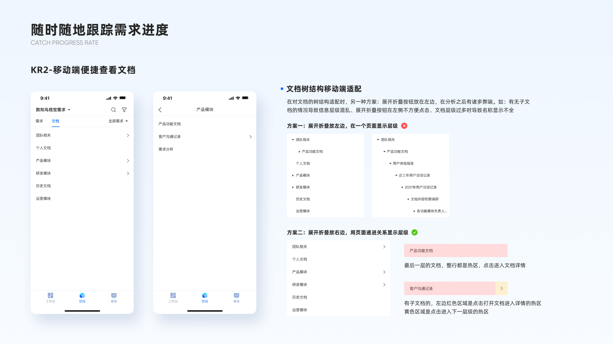
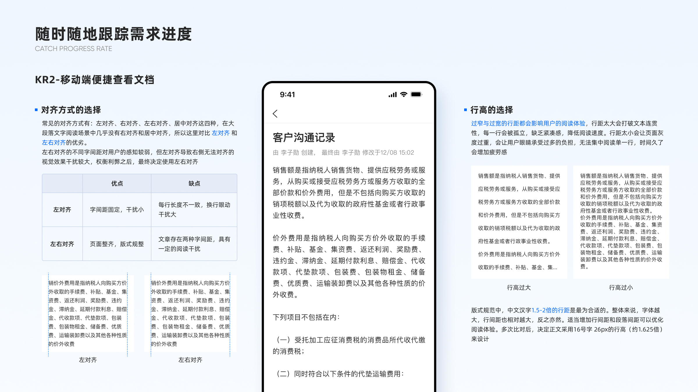
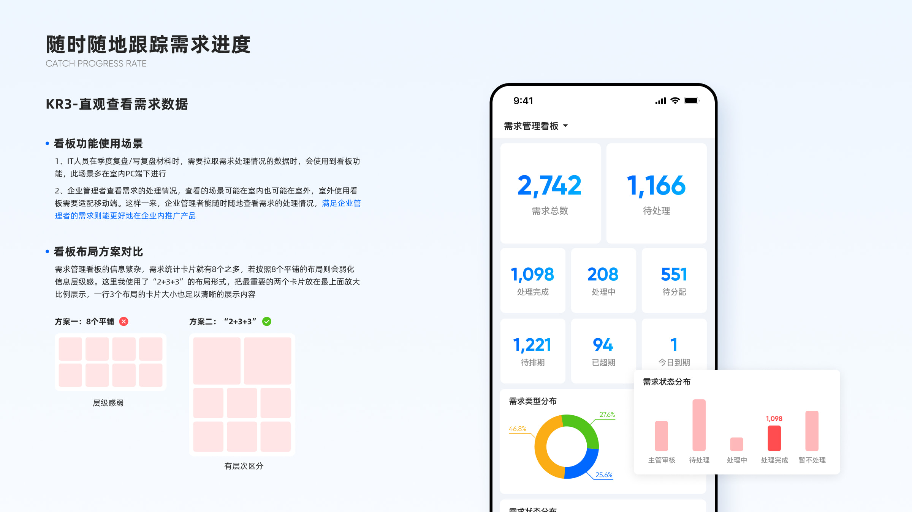
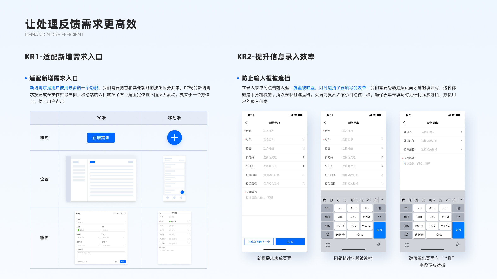
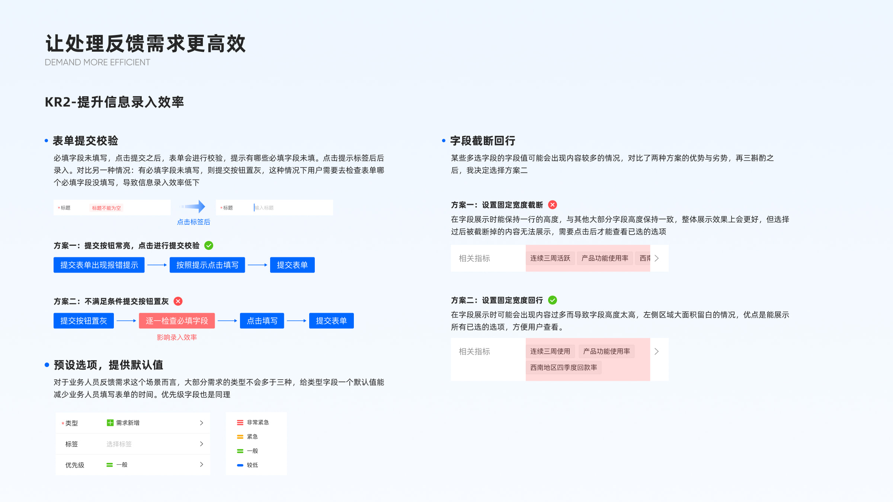
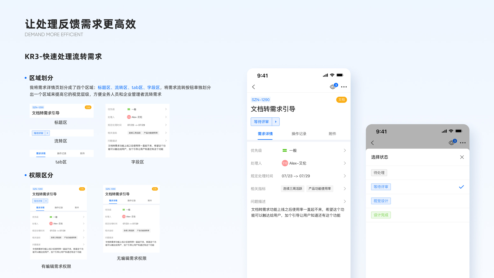

Preface写在最前
“移动端适配是客户一直以来多次提过的需求，移动端满足企业管理者随时随地查看需求的处理情况以及看板数据。满足企业管理者的需求则能进一步推动产品在企业内部普及落地。”
Scope负责内容
- 场景分析
- 竞品分析
- 界面设计









“移动端适配是客户一直以来多次提过的需求，移动端满足企业管理者随时随地查看需求的处理情况以及看板数据。满足企业管理者的需求则能进一步推动产品在企业内部普及落地。”







